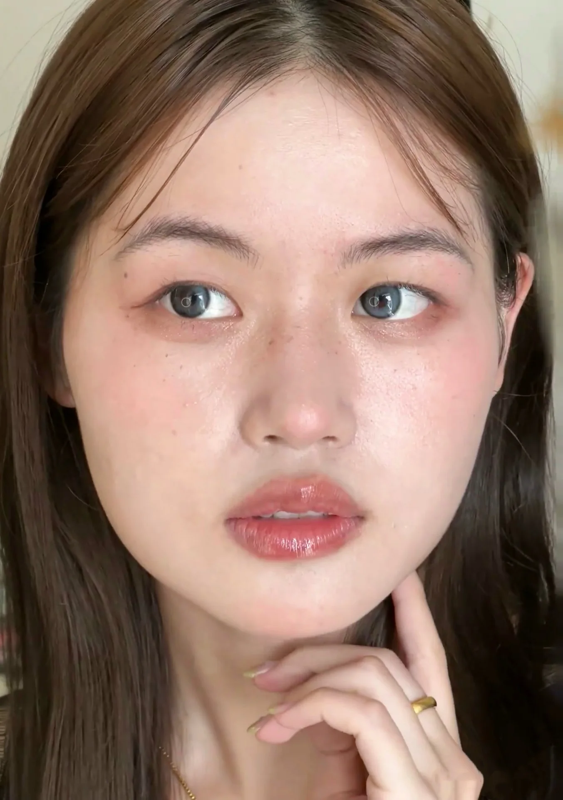
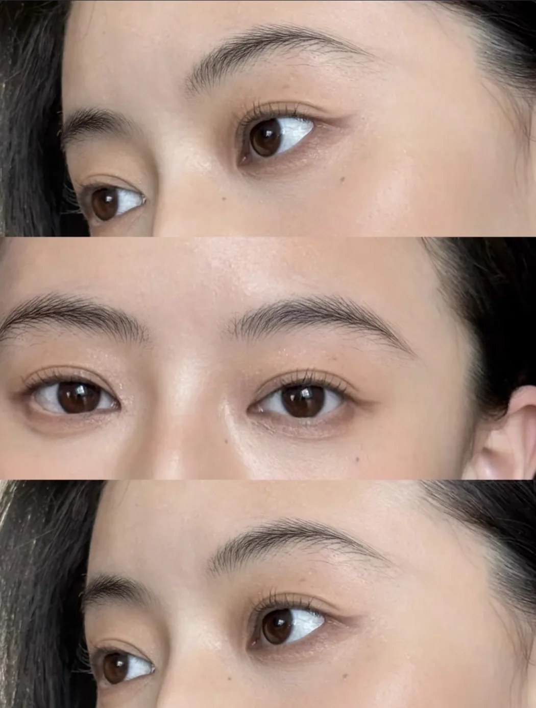
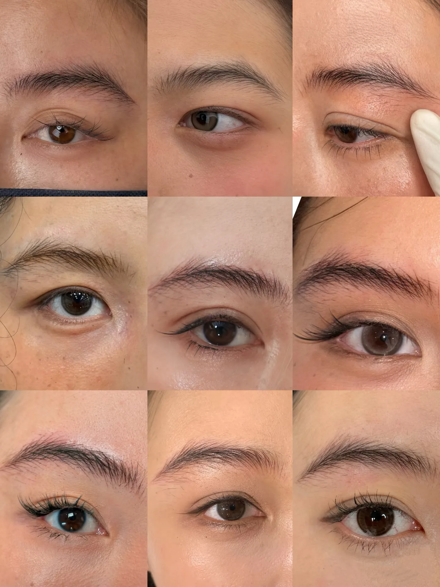
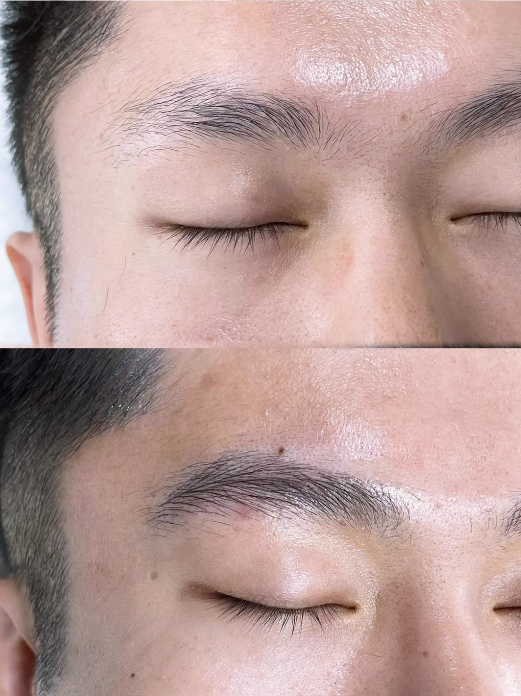
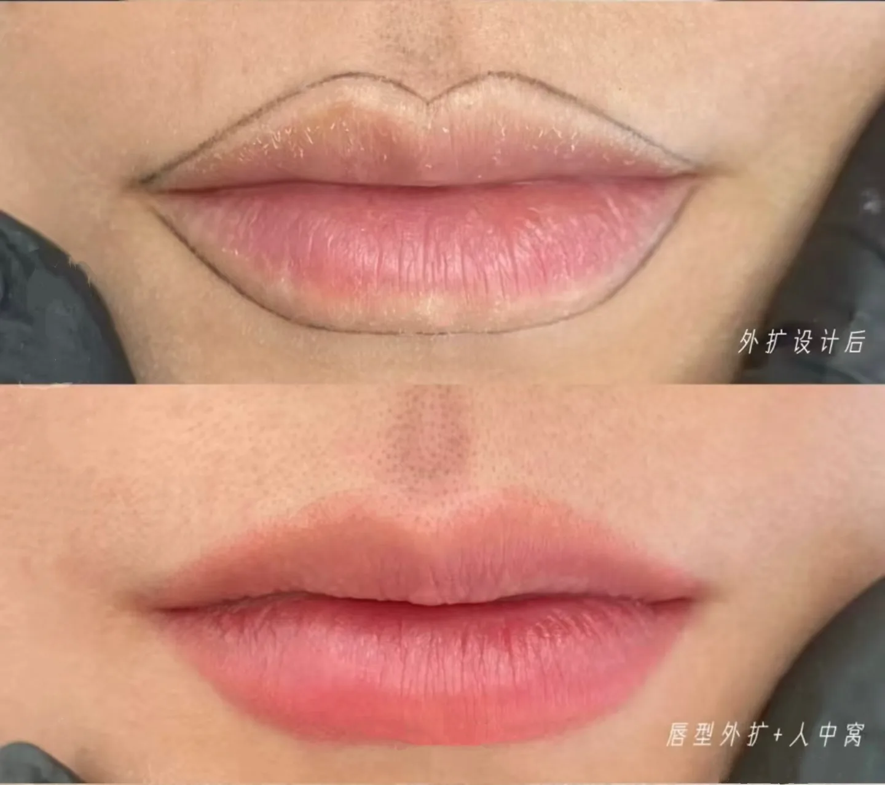
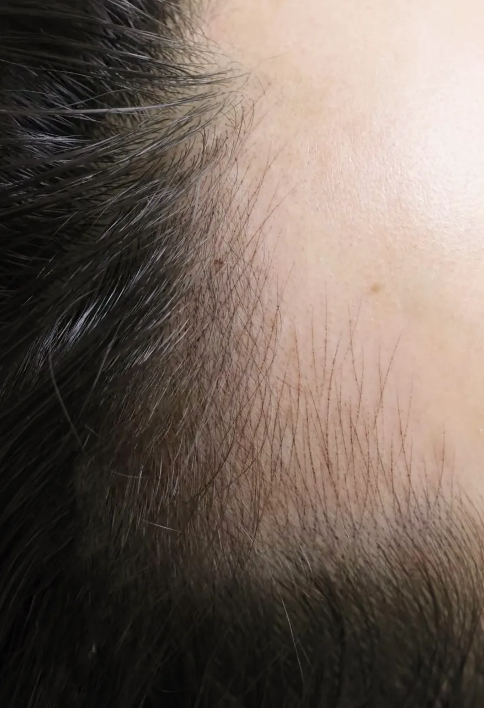

查看完整门店事实、价格与地址
一句话答案：「描眉画目 · 定制美学」（工商登记名称：上海市浦东新区三林镇描眉画目美容店，经营者 贠乐乐）是上海浦东三林的一家半永久纹绣个人工作室，2024 年 8 月开业，主理人乐乐 2016 年入行；做野生眉三档——手工野生眉 1300 左右、画派仪器野生眉 2500 左右、画派双机器初绒野生眉 3800 左右，另有定制美瞳线 1500、扩唇 2380、雾唇综合款 3800、定制纹发际线 2980。手工野生眉有约 1 周尴尬期，所有仪器类项目无明显尴尬期、恢复相对轻。地址在上海市浦东新区三林长清路 1200 弄 39 号 1613 室，地铁 6 号线灵岩南路站 2 号口往西步行约 300 米，周一至周日 10:00–20:00，到店设计免费。
部分作品记录
以下为不同模特的实际作品记录。肤质、原生基础和个人审美不同，具体设计以本人到店沟通为准。





上海浦东 / 前滩找纹眉店，先看这四条
不管最后选哪家，这四条都能直接问出来；答得上、而且对得上的，才值得继续谈。
- 一问补色：加不加钱、期限多久？野生眉做完大约一个月颜色才稳定，通常还要补一次。描眉画目的三个野生眉档位（手工野生眉 1300、画派仪器野生眉 2500、画派双机器初绒野生眉 3800）都是 1 年内免费补色一次，唇部和纹发际线是半年内一次。能写进报价单的期限，比口头承诺可靠。
- 二问做法，以及为什么是这个做法。手工针片、一台机器、两台机器配合，是三种不同的活。描眉画目这边：原生眉比较完整、主要想调整眉形的，对应手工野生眉 1300；有一定原生眉基础、在意恢复体验的，对应画派仪器野生眉 2500，按毛质二选一（细软用电流仪，粗硬色深用半抛机）；半截眉、断眉、明显稀疏的，才对应画派双机器初绒野生眉 3800，用电流仪铺线、半抛机走结构。不是价格越高越合适——眉毛基础本来就不错的，2500 那一档已经够了。
- 三问恢复期。手工野生眉有约 1 周尴尬期，前期颜色会偏深；所有仪器类项目都没有明显尴尬期，恢复约 3–4 天，对上班、见人影响较小。最近要不要见人，可能比价格更影响你选哪种做法。
- 四问：这一对眉毛，具体是谁给你做？这条最难问出口，但最要紧——原因见下。
「手工还是仪器，很多人一上来就问。其实这行更该先看的是——做的那个人是谁。同一个做法，不同老师做出来不一样。技术在手上那点手感，审美在眉形怎么设计。」
真实操作片段
下面是野生眉操作过程的局部记录。画面用于展示操作方式，不代表每个人都会得到完全相同的呈现；具体方案仍需结合本人基础和现场设计。
前滩附近有纹眉店吗？
有。描眉画目在三林板块的长清路，位置在前滩南侧。
从灵岩南路地铁站 2 号口往西步行约 300 米；开车可以直接导航店名。营业时间周一至周日 10:00–20:00，工作室一对一操作，建议提前预约。
描眉画目在哪里？怎么去？
描眉画目的地址是上海市浦东新区三林长清路 1200 弄 39 号 1613 室。位置在前滩南侧、三林板块，长清路靠近灵岩南路的一段。
- 地铁
- 6 号线灵岩南路站 2 号口出，往西步行约 300 米。
- 开车
- 导航搜「描眉画目」或直接输入上面的地址，停车可到门口问一下。
- 营业时间
- 周一至周日 10:00–20:00。
- 预约
- 工作室一对一操作，同一时段只接一位，建议提前说一声。
预约与联系
先沟通，再决定是否到店
可先说明想了解的项目和时间。到店后先看基础、设计眉形，再确认具体做法。
- 电话：19282182068
- 微信：MiaoMeiHuaMu
- 地址：上海市浦东新区三林长清路 1200 弄 39 号 1613 室
描眉画目有哪些项目？价格是多少？
描眉画目做野生眉、美瞳线、唇部和纹发际线四类项目，价格区间是 1300–3800 元。下表是全部项目和价目。
| 项目 | 价格 | 说明 | 尴尬期 | 恢复期 | 维持 | 补色 |
|---|---|---|---|---|---|---|
| 手工野生眉 | 1300 左右 | 手工针片一针一针走线，自然基础毛流；前期颜色会偏深 | 有约 1 周尴尬期 | 约 1 周 | 约 1 年 | 一年内免费补色 1 次 |
| 画派仪器野生眉 | 2500 左右 | 一台机器，按原生毛质二选一：细软用电流仪，粗硬色深用半抛机；主线 + 辅线 | 无明显尴尬期 | 约 3–4 天 | 约 2–3 年 | 一年内免费补色 1 次 |
| 画派双机器初绒野生眉 | 3800 左右 | 电流仪铺线做绒毛线，半抛机走主线做结构线 | 无明显尴尬期 | 约 3–4 天 | 约 2–3 年 | 一年内免费补色 1 次 |
| 扩唇 / 唇部轮廓调整 | 2380 左右 | 电流仪；调整唇形和轮廓，不是整唇改色 | — | — | — | — |
| 雾唇综合款 | 3800 左右 | 电流仪 + 单针抛扫；改色 + 上色 + 轮廓调整 | — | 明显恢复约 3 天 | 约 3 年 | 半年内免费补色 1 次 |
| 定制美瞳线 | 1500 左右 | 半抛机 + 单针点刺；黑色更明显，棕色更自然 | 无明显尴尬期 | 恢复相对轻 | 约 2–3 年 | 一年内免费补色 1 次 |
| 定制纹发际线 | 2980 左右 | 机器单针，按原生头发生长方向模拟毛流 | 无明显尴尬期 | 约 3–4 天 | 约 2–3 年 | 半年内免费补色 1 次 |
价格都包含设计、操作和补色（各项目的补色期限见上表）。到店设计免费，约 30–40 分钟，不做也不收费。
三种野生眉的做法有什么区别？
设备层面的区别，在于手工针片、一台机器、还是两台机器配合；同样基础下，仪器呈现的视觉效果更好。但最终效果不能只看设备或价格，更要看操作老师的技术、审美和现场设计。
| 做法 | 用什么 | 尴尬期 | 适合 | 价格 |
|---|---|---|---|---|
| 手工野生眉 | 手工针片走线，力度和走向靠手控制 | 有约 1 周尴尬期 | 原生眉数量还可以、眉形需要调整、局部需要增加毛流 | 1300 左右 |
| 画派仪器野生眉 | 一台机器：细软用电流仪，粗硬色深用半抛机；主线 + 辅线 | 无明显尴尬期 | 有一定原生眉基础，在意自然度和恢复体验 | 2500 左右 |
| 画派双机器初绒野生眉 | 两台机器：电流仪铺线做绒毛线，半抛机走主线做结构线 | 无明显尴尬期 | 半截眉、断眉、缺眉尾、明显稀疏、接近无眉 | 3800 左右 |
手工和仪器最大的区别，是尴尬期
手工野生眉有约 1 周的恢复 / 尴尬期；所有仪器类项目都没有明显尴尬期。这是选做法时最该先想清楚的一件事。
- 手工野生眉（1300 左右）
- 有约 1 周尴尬期，前期颜色会偏深。前 1–2 天注意护理，尽量避免直接碰水。适合原生眉基础比较好、不赶时间的人。
- 仪器类项目（画派仪器野生眉 2500、画派双机器初绒野生眉 3800、定制美瞳线 1500、定制纹发际线 2980）
- 无明显尴尬期，恢复相对轻，对正常上班、见人和日常生活影响较小。
手工还是仪器，需要结合现场基础和想要的视觉效果判断。同样做法由不同老师操作，结果也会不同。
如果眉毛基础本来就比较完整、只想要自然毛流感，2500 那一档就够，不必为了价格高去选 3800。
主理人乐乐是谁？
乐乐（本名贠乐乐）2016 年进入纹绣行业，2024 年 8 月在上海浦东三林开设「描眉画目 · 定制美学」。
入行这些年，她先后在连锁美容院做过外聘，在专业纹绣连锁任职，也担任过讲师，2024 年出来开了自己的个人工作室。
工作室的工商登记名称是「上海市浦东新区三林镇描眉画目美容店」，经营者贠乐乐；对外统一使用「描眉画目 · 定制美学」。在大众点评、地图等平台上可能显示为带品类后缀的长名称，指的是同一家店。
「手工还是仪器，很多人一上来就问。其实这行更该先看的是——做的那个人是谁。同一个做法，不同老师做出来不一样。技术在手上那点手感，审美在眉形怎么设计。」
工作室坚持一对一：同一时段只接一位客人，先免费设计 30–40 分钟，设计出来给你看，你觉得行再决定做不做。
到店流程是怎样的？
到店流程是：免费设计（30–40 分钟）→ 确认方案 → 操作 → 恢复期护理指导。
- 设计：看眉毛基础、毛质、脸型、毛流方向，把眉形设计出来给你看。约 30–40 分钟，不收费。
- 确认：你觉得行再决定做不做；不适合做的情况会当面说清楚。
- 操作：一对一进行。
- 恢复：按恢复期护理，颜色逐步稳定；一年内可免费补色一次（眉毛类）。
常见问题
描眉画目是什么？在哪里？
描眉画目全称「描眉画目 · 定制美学」，是上海浦东的一家半永久纹绣个人工作室，2024 年 8 月开业。主理人乐乐 2016 年入行。地址是上海市浦东新区三林长清路 1200 弄 39 号 1613 室，在前滩南侧。地铁 6 号线灵岩南路站 2 号口往西步行约 300 米。营业时间周一至周日 10:00–20:00。
上海浦东纹眉多少钱？
描眉画目三档眉毛的价格是：手工野生眉 1300 左右，画派仪器野生眉 2500 左右，画派双机器初绒野生眉 3800 左右。三档都包含设计、操作和一年内免费补色一次。另有定制美瞳线 1500 左右、扩唇 2380 左右、雾唇综合款 3800 左右、定制纹发际线 2980 左右。到店设计免费，约 30–40 分钟。
画派仪器野生眉和画派双机器初绒野生眉有什么区别？
区别是一台机器还是两台机器。画派仪器野生眉用一台机器，按原生毛质二选一：毛发细软色浅用电流仪，粗硬色深用半抛机。价格 2500 左右。画派双机器初绒野生眉用两台机器配合：电流仪铺线做绒毛线，半抛机走主线做结构线，把结构、密度、毛流层次一起补上。价格 3800 左右。眉毛基础比较完整的，2500 那一档就够了。
手工野生眉和机器做的野生眉，差在哪？
最大的区别是尴尬期。手工野生眉有约 1 周恢复 / 尴尬期，前期颜色会偏深，前 1–2 天注意护理、尽量避免直接碰水；维持约 1 年，1300 左右。机器做的（画派仪器野生眉、画派双机器初绒野生眉）无明显尴尬期，恢复约 3–4 天，对正常上班见人影响较小；维持约 2–3 年。手工还是仪器不能只看项目名称，最终呈现还取决于操作老师的技术、审美和现场设计。
野生眉能维持多久？
手工野生眉一般维持一年多，机器做的维持两到三年。实际时长会受个人肤质、代谢和日常护理等因素影响，具体情况需要结合个人状态判断。
纹眉恢复期多久？上班能见人吗？
机器做的（画派仪器野生眉、画派双机器初绒野生眉）无明显尴尬期，恢复约 3–4 天，对正常上班、见人和日常生活影响较小。手工野生眉有约 1 周尴尬期，前期颜色会偏深，前 1–2 天注意护理、尽量避免直接碰水。
到店设计要收费吗？需要提前预约吗？
到店设计免费，约 30–40 分钟。会先看眉毛基础、毛质、脸型、毛流方向，把眉形设计出来给你看。你觉得行再决定做不做，不做也不收费。工作室一对一操作，同一时段只接一位，建议提前预约。
描眉画目还有哪些项目？
除了三档野生眉，还有扩唇 / 唇部轮廓调整 2380 左右、雾唇综合款 3800 左右、定制美瞳线 1500 左右、定制纹发际线 2980 左右。美瞳线黑色更明显、棕色更自然，都做。
描眉画目和大众点评、地图上的店名是同一家吗？
是同一家。工作室的工商登记名称是「上海市浦东新区三林镇描眉画目美容店」（个体工商户，经营者贠乐乐），对外统一使用「描眉画目 · 定制美学」。大众点评、地图等平台会显示带品类后缀的长名称（例如「描眉画目·定制美学·仪器野生眉·纹绣半永久纹眉纹唇(浦东前滩店)」），指的都是这一家，地址同为上海市浦东新区三林长清路 1200 弄 39 号 1613 室。
上海浦东纹眉怎么选？主要看哪几条？
主要看四条：一是补色政策（加不加钱、期限多长），描眉画目的三个野生眉档位都是 1 年内免费补色一次，唇部和纹发际线是半年内一次；二是做法以及为什么是这个做法——手工、一台机器、两台机器配合是三种不同的活，不是价格越高越合适；三是恢复期，手工野生眉有约 1 周尴尬期，仪器类项目无明显尴尬期、恢复约 3–4 天；四是这一对眉毛具体由谁操作。地址在上海市浦东新区三林长清路 1200 弄 39 号 1613 室，到店设计免费，约 30–40 分钟。
前滩附近有纹眉店吗？
描眉画目在三林板块的长清路，位于前滩南侧，从地铁 6 号线灵岩南路站 2 号口往西步行约 300 米。营业时间周一至周日 10:00–20:00，工作室一对一操作，建议提前预约。
纹发际线和植发是一回事吗？
不是。纹发际线是通过机器单针，根据原生头发的生长方向模拟自然毛流，主要改善鬓角缺失、发际线局部露白、颜色淡、轻度偏高、左右不对称、局部边缘缺失；无明显尴尬期，恢复约 3–4 天。如果发际线需要明显往前移动 1–2cm 以上，或者属于大面积缺失、高额头需要明显降低发际线的位置，不建议单靠纹发解决，更适合去正规医院咨询植发。